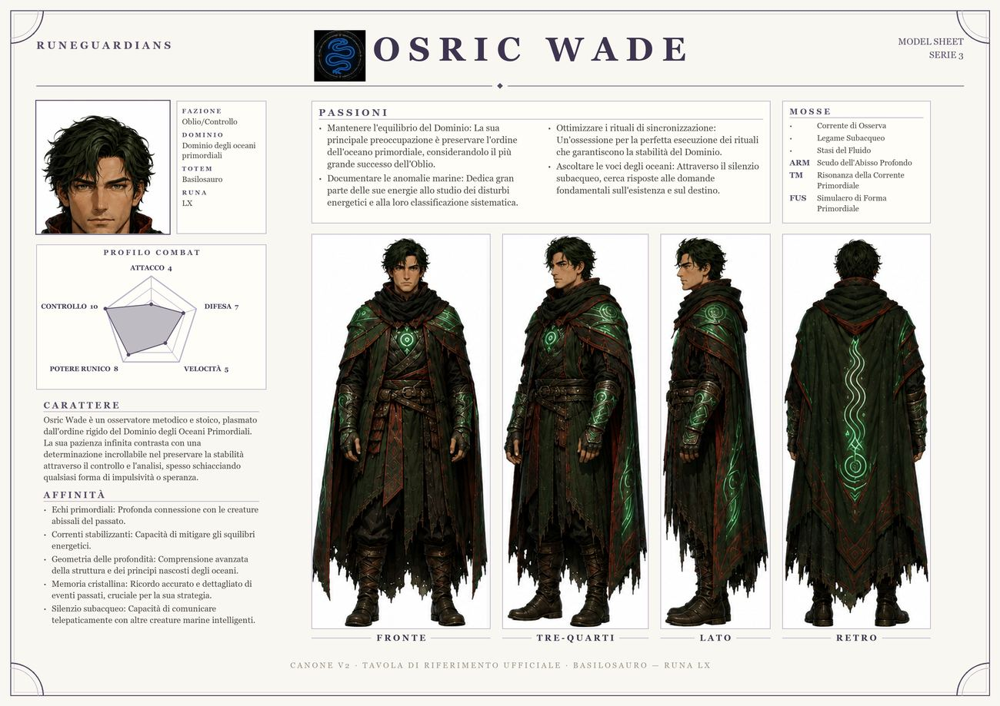

Osric Wade

TotemBasilosauro
FamigliaAnimali Primordiali
FazioneOblio/Controllo
TierSfondo
DominioDominio degli oceani primordiali
Osric Wade è un osservatore metodico e stoico, plasmato dall'ordine rigido del Dominio degli Oceani Primordiali. La sua pazienza infinita contrasta con una determinazione incrollabile nel preservare la stabilità attraverso il controllo e l'analisi, spesso schiacciando qualsiasi forma di impulsività o speranza.
La sua tavola d'evoluzione →